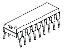
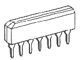

Типы корпусов импортных микросхем
Корпус - это часть конструкции микросхемы, предназначенная для защиты от внешних воздействий и для соединения с внешними электрическими цепями посредством выводов. Корпуса стандартизованы для упрощения технологического процесса изготовления изделий из разных микросхем. Число стандартных корпусов исчисляется сотнями!
Ниже представлены наиболее распространенные серии корпусов импортных микросхем.
Для просмотра чертежей корпусов микросхем кликните ссылку с названием типа корпуса или на соответствующую типу корпуса картинку.
|
 DIP (Dual In-line Package, также DIL) - тип корпуса микросхем, микросборок и некоторых других электронных компонентов для монтажа в отверстия печатной платы. Имеет прямоугольную форму с двумя рядами выводов по длинным сторонам. Может быть выполнен из пластика (PDIP) или керамики (CDIP). Обычно в обозначении также указывается число выводов. |
SOIC или просто SO (small-outline integrated circuit), а также SOP (Small-Outline Package) корпус микросхем , предназначенный для поверхностного монтажа, занимающий на печатной плате на 30-50% меньше площади чем аналогичный корпус DIP, а также имеющий на 50-70% меньшую толщину. Обычно в обозначении также указывается число выводов. |
|
 SIP (Single In-line Package) – плоский корпус для вертикального монтажа в отверстия печатной платы, с одним рядом выводов по длинной стороне. Обычно в обозначении также указывается число выводов. |
QFP (Quad Flat Package) — плоский корпус с четырьмя рядами контактов. Представляет собой квадратный корпус с расположенными по краям контактами. Существуют также другие варианты: TQFP (Thin QFP) — с малой высотой корпуса, LQFP (Low-profile QFP) и многие другие. |
|
LCC (Leadless Chip Carrier) представляет собой низкопрофильный квадратный керамический корпус с расположенными на его нижней части контактами, предназначенный для поверхностного монтажа. |
PLCC (Plastic Leaded Chip Carrier) и СLCC (Ceramic Leaded Chip Carrier) представляют собой квадратный корпус с расположенными по краям контактами, предназначенный для установки в специальную панель (часто называемую «кроваткой»). |
|
TSOP (Thin Small-Outline Package) тонкий малогабаритный корпус, разновидность SOP корпуса микросхем. Часто применяется в области DRAM, особенно для упаковки низковольтных микросхем из-за их малого объёма и большого количества штырьков. |
SSOP (Shrink small-outline package) (уменьшенный малогабаритный корпус) разновидность SOP корпуса микросхем , предназначенного для поверхностного монтажа. Выводы расположены по двум длинным сторонам корпуса. |
|
ZIP (Zigzag-In-line Package) - плоский корпус для вертикального монтажа в отверстия печатной платы со штырьковыми выводами, расположенными зигзагообразно. |
|